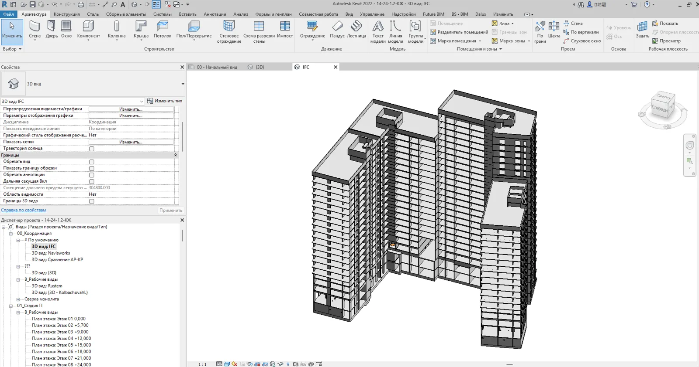
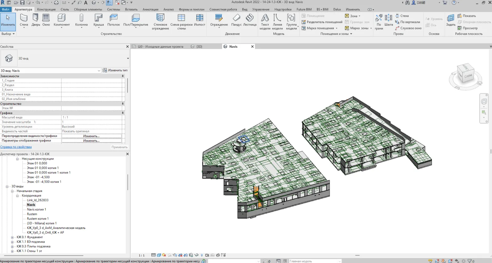
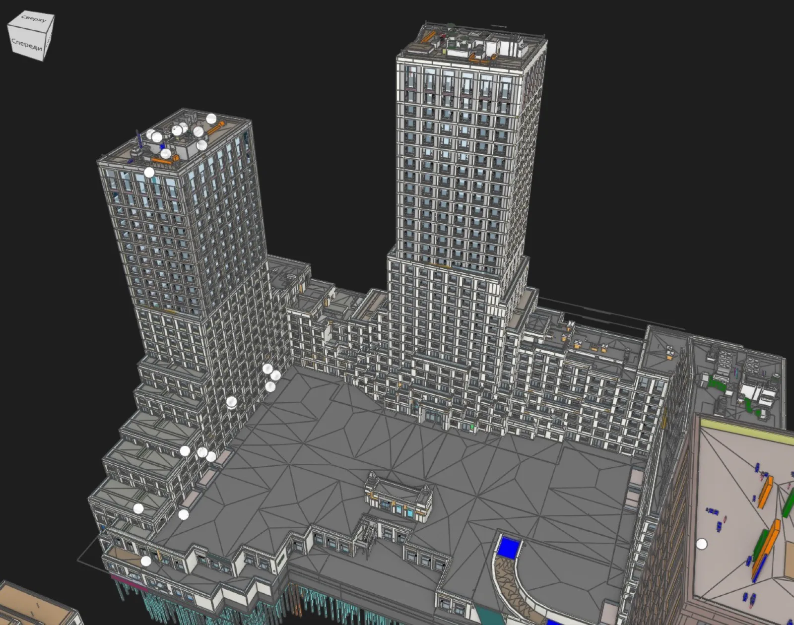
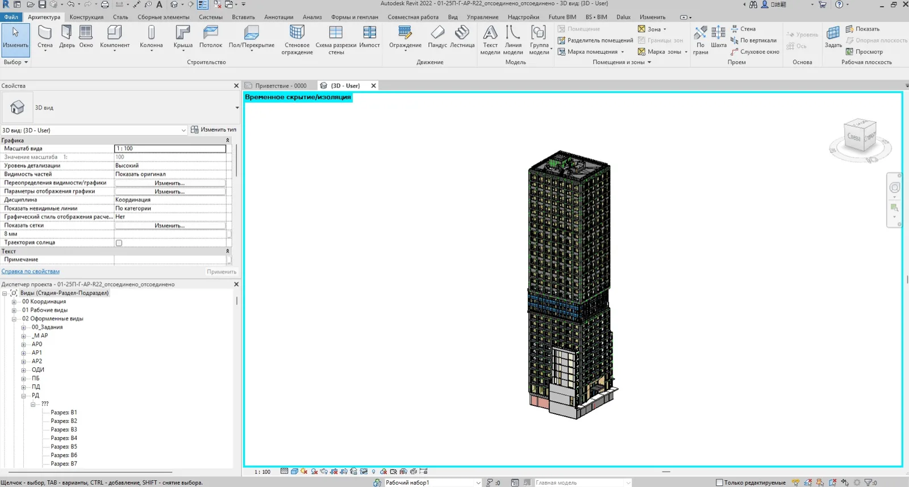

BIM-проектов и моделей в контроле
BIM + AI + Automation
Автоматизация BIM, Revit и AI-процессов
Помогаем BIM-командам ускорять проверки моделей, снижать количество ошибок и автоматизировать рутину через Dynamo, AI, PostgreSQL, Docker и плагины.
REVITDynamo
CLASHCheck
DATAClean
AILLM
снижение коллизий до стройки
ускорение рутинных проверок
цифровой контроль BIM-данных
Фокус
Что вы получаете

Автоматизация Revit
Dynamo, параметры, спецификации, проверки моделей и снижение ручной работы.
Быстрее процессы →
AI для BIM-команд
LLM-ассистенты, анализ данных, отчёты, регламенты и поддержка BIM-координации.
Умнее контроль →
Данные и инфраструктура
PostgreSQL, Docker, API, плагины Revit и системы контроля качества моделей.
Чище данные →Услуги
Что закрываем для команды
BIM-аудит
Проверка процессов, моделей, шаблонов, регламентов и качества данных. Оценка цифровой зрелости и готовности к автоматизации.
BIM-координация
Clash detection, отчёты по коллизиям, контроль смежников, IFC, статусы и прозрачность проектирования.
Автоматизация
Dynamo-скрипты, параметризация, спецификации, проверки, выгрузки и интеграции BIM с внешними системами.
AI и инфраструктура
Подключение LLM, BIM-ассистенты, PostgreSQL, Docker, API, плагины Revit и системы контроля качества моделей.
Подробно по направлениям
Автоматизация проверки BIM-моделей
Настраиваем автоматическую проверку BIM-моделей по вашему стандарту и EIR: параметры, имена, геометрия, коллизии. Отчёт и замечания уходят проектировщику.
Подробнее об услуге →BIM-автоматизация через API и интеграции
Связываем модель с 1С, ERP и BI через API: выгрузки по расписанию, ведомости и отчёты без ручного Excel, база вместо разрозненных таблиц. Разберём вашу задачу.
Подробнее об услуге →ИИ в проектировании: что работает, а что пока нет
Где искусственный интеллект экономит время проектировщику, а где врёт: разбор замечаний, поиск по нормативам, отчёты по модели. Локальный контур, без облака.
Подробнее об услуге →Dynamo-скрипты и плагины Revit на заказ
Пишем Dynamo-скрипты и плагины Revit под задачи вашего отдела: параметры, спецификации, нумерация, отчёты. Открытая вилка сроков и цены, исходники ваши.
Подробнее об услуге →Кейсы
Практика вместо презентаций

Coordination
Снижение коллизий до выпуска документации
Настроили цикл проверок, отчёты и статусы для смежников.

Automation
Автоматизация спецификаций и параметров
Dynamo-сценарии сократили ручные операции и ошибки данных.
Блог
Практические статьи о BIM, AI и автоматизации
Автоматизация Revit через Dynamo
Как ускорить проверки моделей, параметры, спецификации и контроль BIM-данных.
Читать →AI в BIM-процессах
Как LLM помогают BIM-командам анализировать данные, отчёты и регламенты.
Читать →
Dynamo-скрипты для Revit
5 сценариев автоматизации, которые быстрее всего дают эффект BIM-команде.
Читать →BIM-координация и clash detection
Как Navisworks, контроль качества и отчёты снижают ошибки до стройки.
Читать →Свежее в блоге
Тяжёлая модель Revit: что ускоряет, а что миф
Замеры до и после: предупреждения, purge, импортированные DWG, связи и рабочие наборы. Что дало минуты, а что не дало ничего, кроме потраченного времени.
Читать →Спецификации из Revit в Excel и обратно: три способа
Встроенный экспорт, Dynamo и плагины: сравниваем по времени, деньгам и риску. Где теряются данные и как загрузить правки обратно в Revit, не сломав модель.
Читать →Как автоматически заполнить параметры в Revit
Общие, типовые и параметры экземпляра: чем отличаются при записи. Скрипт Dynamo для массового заполнения, проверка результата и список того, что записать нельзя.
Читать →Контакты
Хотите внедрить BIM, AI или автоматизацию?
Опишите задачу: аудит, координация, LLM-ассистент, PostgreSQL/Docker-инфраструктура или плагин для Revit.